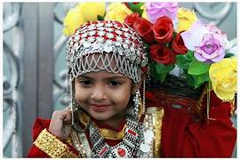
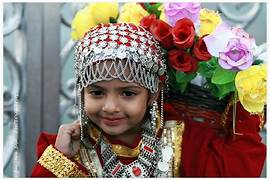
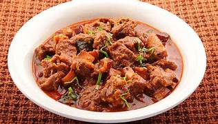
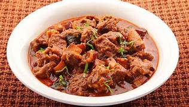

About Shimala
Shimla, the capital of Himachal Pradesh, is a charming hill station known for its colonial architecture, toy train, and cool climate. It was once the summer capital of British India.
Culture & Traditions
- Rich in Pahadi culture with British and Indian influences
- Festivals like Shimla Summer Festival, Diwali, and Navratri are celebrated
- People wear woolen caps, shawls, and traditional Himachali attire
 

Famous Dish
- Chana Madra
- Babru (stuffed kachori)
- Tudkiya Bhath
- Chha Gosht (lamb curry)
 

Best Time to Visit
- March to June for cool summer weather
- December to February for snow lovers
Budget(per Day)
- Budget: ₹1000–₹1500
- Mid-range: ₹2000–₹3000
- Mid-range: ₹2000–₹3000
Things To Do
- Stroll on Mall Road and The Ridge
- Visit Jakhoo Temple (with monkeys!)
- Enjoy the toy train ride from Kalka to Shimla (UNESCO World Heritage)
- See colonial buildings like Viceregal Lodge